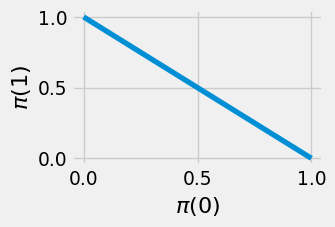

Code
%load_ext autoreload
%autoreload 2The core task of RL is finding the optimal policy in a given environment. This is essentially an optimization problem (i.e. computing a minimum or maximum): out of some class of policies \(\Pi\), we want to find the one that achieves the maximum expected total reward:
\[ \hat \pi = \arg\max_{\pi \in \Pi} \mathop{\mathbb{E}}_{\tau \sim \rho^\pi} [R(\tau)] \quad \text{where} \quad R(\tau) := \sum_{h=0}^{H-1} r(s_h, a_h). \tag{7.1}\]
In a known environment with a finite set of states and actions, we can compute the optimal policy using dynamic programming in \(O( H \cdot |\mathcal{S}|^2 \cdot |\mathcal{A}|)\) steps (Section 2.3.2). In more general settings, though, such as when the environment is unknown, it is typically intractable to compute the optimal policy exactly. Instead, we start from some random policy, and then iteratively improve it by interacting with the environment. Policy iteration (Section 2.4.4.2) and iterative LQR (Section 3.6.4) are two algorithms we’ve seen that do this.
In this chapter, we will explore policy gradient algorithms, which also iteratively improve a policy. The gradient of a function at a specific input point is the direction that increases the output value most rapidly. If we think of the expected total reward as a function of the policy, we can repeatedly shift the policy by the gradient of that function to obtain policies that achieve higher expected total rewards.
Policy gradient methods are responsible for groundbreaking applications including AlphaGo, OpenAI Five, and large language models. This chapter will explore:
Remark 7.1 (Conventions). Policy gradient algorithms typically optimize over stochastic policies (def. 2.6). In this chapter, we will only discuss the case of stochastic policies, though there exist policy gradient algorithms for deterministic policies as well (Silver et al., 2014).
To ease notation, we will treat the horizon \(H\) as finite and avoid adding a discount factor \(\gamma\). We make the policy’s dependence on the timestep \(h\) implicit by assuming that the state space conveys information about the timestep. We also use
\[ R(\tau) := \sum_{h=0}^{H-1} r_h \tag{7.2}\]
to denote the total reward in a trajectory.
%load_ext autoreload
%autoreload 2from utils import Array, Float, Callable, jax, jnp, rng, latex, gym
from jaxtyping import UInt
import jax.random as jr
import functools as ft
import numpy as np
import matplotlib.pyplot as plt
from scipy.stats import norm
from scipy.optimize import minimize
rng = rng(184)Optimizing over the entire space of policies is usually intractable: there’s just too many! There are there are \(|\mathcal{A}|^{|\mathcal{S}|}\) deterministic mappings from state to actions. In continuous state spaces, \(|\mathcal{S}|\) is infinite, so the space of policies becomes infinite-dimensional. Infinite-dimensional spaces are usually hard to optimize over. Instead, we choose a parameterized policy class with a finite number \(D\) of adjustable parameters. Each parameter vector corresponds to a mapping from states to actions. (We also discussed the notion of a parameterized function class in Section 5.3.2). The following examples seek to make this more concrete.
Example 7.1 (Tabular representation) If both the state and action spaces are finite, perhaps we could simply learn a preference value \(\theta_{s,a}\) for each state-action pair, resulting in a table of \(|\mathcal{S}| |\mathcal{A}|\) values. These are the \(D\) parameters of the policy. Then, for each state, to compute the distribution over actions, we perform a softmax operation: we exponentiate each of the values, and then normalize to form a valid distribution.
\[ \pi^\text{softmax}_\theta(a \mid s) = \frac{\exp(\theta_{s,a})}{\sum_{s,a'} \exp (\theta_{s,a'})}. \tag{7.3}\]
In this way, we turn a vector of length \(|\mathcal{S}| |\mathcal{A}|\) into a mapping from \(\mathcal{S} \to \triangle(\mathcal{A})\). However, this doesn’t make use of any structure in the states or actions, so while this is flexible, it is also prone to overfitting. For small state and action spaces, it makes more sense to use a dynamic programming algorithm from Chapter 2.
For a given parameterization, such as the one above, we call the set of resulting policies the parameterized policy class, that is,
\[ \{ \pi_\theta \mid \theta \in \mathbb{R}^D \}, \tag{7.4}\]
where \(D\) is the fixed number of parameters. Let us explore some more examples of parameterized policy classes.
Example 7.2 (Linear in features) Another approach is to map each state-action pair into some feature space \(\phi(s, a) \in \mathbb{R}^D\). Then, to map a feature vector to a probability, we take a linear combination of the features and take a softmax. The parameters \(\theta\) are the coefficients of the linear combination:
\[ \pi^\text{linear}_{\theta}(a \mid s) = \frac{\exp(\theta^\top \phi(s, a))}{\sum_{a'} \exp(\theta^\top \phi(s, a'))}. \tag{7.5}\]
Another interpretation is that \(\theta\) represents the feature vector of the “desired” state-action pair, as state-action pairs whose features align closely with \(\theta\) are given higher probability.
Example 7.3 (Neural policies) More generally, we could map states and actions to unnormalized scores via some parameterized function \(f_\theta : \mathcal{S} \times \mathcal{A} \to \mathbb{R}\), such as a neural network, and choose actions according to a softmax:
\[ \pi^\text{neural}_\theta(a \mid s) = \frac{\exp(f_{\theta}(s, a))}{\sum_{a'} \exp(f_{\theta}(s, a'))}. \tag{7.6}\]
Remark 7.2 (Why softmax). The three parameterized policy classes above all use the softmax operation. Of course, this isn’t the only way to turn a list of values into a probability distribution: for example, you could also subtract by the minimum value and divide by the range. Why is softmax preferred in practice? One reason is that it is a smooth, differentiable function of the input values. It is also nice to work with analytically, and has other interpretations from physics, where it is known as the Gibbs or Boltzmann distribution, and economics, where it is known as the Bradley-Terry model for ranking choices.
Example 7.4 (Diagonal Gaussian policies for continuous action spaces) Consider an \(N\)-dimensional action space \(\mathcal{A} = \mathbb{R}^{N}\). Then for a stochastic policy, we could predict the mean action and then add some random noise to it. For example, we could use a linear model to predict the mean action and then add some noise \(\epsilon \sim \mathcal{N}(0, \sigma^2 I)\) to it.
\[ \pi_\theta(\cdot \mid s) = \mathcal{N}(\theta^\top \phi(s), \sigma^2 I). \]
Now we’ve seen some examples of parameterized policies. Optimizing over a parameterized policy class makes the policy optimization problem finite-dimensional:
\[ \begin{aligned} \hat \theta &= \arg\max_{\theta \in \mathbb{R}^D} J(\theta) \\ \text{where}\quad J(\theta) &:= \mathop{\mathbb{E}}_{\tau \sim \rho^{\pi_\theta}} \sum_{h=0}^{H-1} r(s_h, a_h). \end{aligned} \tag{7.7}\]
This enables us to apply one of the most popular and general optimization algorithms: gradient descent.
Gradient descent is an optimization algorithm that can be applied to any differentiable function. That is, it is a tool for solving
\[ \arg\min_{\theta \in \mathbb{R}^D} J(\theta), \tag{7.8}\]
where \(J(\theta) \in \mathbb{R}\) is the function to be minimized. For two-dimensional inputs, a suitable analogy for this algorithm is making your way down a hill (with no cliffs), where you keep taking steps in the steepest direction downwards from your current position. Your horizontal position \((x, z)\) is the input and your vertical position \(y\) is the function to be minimized. The slope of the mountain at your current position can be expressed using the gradient, written \(\nabla y(x, z) \in \mathbb{R}^2\). This can be computed as the vector of partial derivatives,
\[ \nabla y(x, z) = \begin{pmatrix} \frac{\partial y}{\partial x} \\ \frac{\partial y}{\partial z} \end{pmatrix}. \tag{7.9}\]
def f(x, y):
return 100.0 * (y - x**2)**2 + (1 - x)**2
# Create a grid of points
X, Y = jnp.mgrid[0:1:40j, 0:1:40j]
Z = f(X, Y)
fig, ax = plt.subplots(figsize=(4, 3))
contourf = ax.contourf(X, Y, Z, levels=20, alpha=0.6)
fig.colorbar(contourf, ax=ax)
tx, ty = 0.5, 0.8
gx, gy = -0.001 * jnp.asarray(jax.grad(f, argnums=(0, 1))(tx, ty))
ax.arrow(tx, ty, gx, gy, fc='blue', ec='blue', width=0.01, head_width=0.05, head_length=0.1, zorder=5)
ax.scatter(tx, ty, color='red', s=100, zorder=5)
ax.set_xlabel(r"$x$")
ax.set_ylabel(r"$y$")
plt.show()To calculate the slope (aka “directional derivative”) of the mountain in a given direction \((\Delta x, \Delta z)\), you take the dot product of the difference vector with the gradient:
\[ \Delta y = \begin{pmatrix} \Delta x \\ \Delta z \end{pmatrix} \cdot \nabla y(x, z), \tag{7.10}\]
where \(x, z\) is your current position. What direction should we walk to go down the hill as quickly as possible? That is, we want to find the direction \((\Delta x, \Delta z)\) that minimizes the slope:
\[ \arg\min_{\Delta x, \Delta z} \Delta y. \tag{7.11}\]
We use the useful fact that, for a given vector \(v\), the direction \(u\) that minimizes the dot product \(u \cdot v\) points in the opposite direction to \(v\). This should make intuitive sense, since \(u \cdot v = \|u\| \|v\| \cos \theta\), where \(\theta\) is the angle between \(u\) and \(v\), and the cosine function is minimized at \(\theta = \pi\). Applying this to eq. 7.10, we see that the direction of steepest decrease is opposite to the gradient. “Walking” in that direction corresponds to subtracting a multiple of the gradient from your current position:
\[ \begin{pmatrix} x^{t+1} \\ z^{t+1} \end{pmatrix} = \begin{pmatrix} x^{t} \\ z^{t} \end{pmatrix} - \eta \nabla y(x^{t}, z^{t}) \]
where \(t\) denotes the iteration of the algorithm and \(\eta > 0\) is a “step size” hyperparameter that controls the size of the steps we take. (Note that we could also vary the step size across iterations, that is, \(\eta^0, \dots, \eta^T\).)
Remark 7.3 (Minimization vs maximization). Optimization problems are usually posed as minimization problems by convention. To solve a maximization problem with gradient descent, you could simply take steps in the direction of the positive gradient. This also corresponds to flipping the sign of the objective function.
The case of a two-dimensional input is easy to visualize. The analogy to climbing a hill (if we were maximizing the function) is why gradient descent is sometimes called hill climbing and the graph of the objective function is called the loss landscape. (The term “loss” comes from supervised learning, which you can read about in Chapter 5.) But this idea can be straightforwardly extended to higher-dimensional inputs. From now on, we’ll use \(J\) to denote the function we’re trying to maximize, and \(\theta\) to denote the parameters being optimized over. (In the above example, \(\theta = \begin{pmatrix} x & z \end{pmatrix}^\top\)). Let’s summarize the algorithm in general:
Definition 7.1 (Gradient descent) Suppose we are trying to solve the optimization problem
\[ \theta^\star = \arg\min_{\theta \in \mathbb{R}^D} J(\theta), \tag{7.12}\]
where \(J(\theta) \in \mathbb{R}\) is the differentiable function to be minimized. Gradient descent starts with an initial guess \(\theta^0\) and then takes steps in the direction of \(- \nabla J(\theta^t)\), where \(\theta^t\) is the current iterate:
\[ \theta^{t+1} = \theta^t - \eta \nabla J(\theta^t). \tag{7.13}\]
Note that we scale \(\nabla J(\theta^t)\) by the step size \(\eta > 0\), also known as the learning rate.
def gradient_descent(
theta_init: Float[Array, " D"],
objective: Callable[[Float[Array, " D"]], float],
eta: float,
n_steps: UInt,
):
# `estimate_gradient` eats the current parameters and returns an estimate of the objective function's gradient at those parameters.
theta = theta_init
history = [theta]
for step in range(n_steps):
theta = theta + eta * jax.grad(objective)(theta)
history.append(theta)
return theta, jnp.array(history)
latex(gradient_descent, id_to_latex={"objective": "J"})$
Notice that the parameters will stop changing once \(\nabla J(\theta) = 0\). Once we reach this stationary point, our current parameters are ‘locally optimal’ (assuming we’re at a local minimum): it’s impossible to increase the function by moving in any direction. If \(J\) is convex (i.e. the function looks like an upward-curved bowl), then the only point where this happens is at the global optimum. Otherwise, if \(J\) is nonconvex, the best we can hope for is a local optimum. We won’t go deeper into the theory of convex functions here. For more details, refer to the textbook of Boyd & Vandenberghe (2004).
Remark 7.4 (Limitations of gradient descent). Gradient descent and its variants are responsible for most of the major achievements in modern machine learning. It is important to note, however, that for many problems, gradient descent is not a good optimization algorithm to reach for! If you have more information about the problem, such as access to second derivatives, you can apply more powerful optimization algorithms that converge much more rapidly. Read Nocedal & Wright (2006) if you’re curious about the field of numerical optimization.
How does a computer compute the gradient of a function?
One way is symbolic differentiation, which is similar to the way you might compute it by hand: the computer applies a list of rules to transform the symbols involved. Python’s sympy package (Meurer et al., 2017) supports symbolic differentiation. However, functions implemented as algorithms in code may not always have a straightforward symbolic representation.
Another way is numerical differentiation, which is based on the limit definition of a (directional) derivative:
\[ \nabla_{\boldsymbol{u}} J(\boldsymbol{x}) = \lim_{\varepsilon \to 0} \frac{J(\boldsymbol{x} + \varepsilon \boldsymbol{u}) - J(\boldsymbol{x})}{\varepsilon} \tag{7.14}\]
Then, we can substitute a small value of \(\varepsilon\) on the r.h.s. to approximate the directional derivative. How small, though? Depending on how smooth the function is and how accurate our estimate needs to be, we may need such a small value of \(\varepsilon\) that typical computers will run into rounding errors. Also, to compute the full gradient, we would need to compute the r.h.s. once for each input dimension. This is an issue if computing \(J\) is expensive.
Automatic differentiation achieves the best of both worlds. Like symbolic differentiation, we manually implement the derivative rules for a few basic operations. However, instead of executing these on the symbols, we execute them on the values when the function gets called, like in numerical differentiation. This allows us to differentiate through programming constructs such as branches or loops, and doesn’t involve any arbitrarily small values. Baydin et al. (2018) provides an accessible survey of automatic differentiation. At the time of writing, all of the popular Python libraries for machine learning, such as PyTorch (Ansel et al., 2024) and Jax (Bradbury et al., 2018), use automatic differentiation.
In real applications, computing the gradient of the target function is not so simple. As an example from supervised learning, \(J(\theta)\) might be the sum of squared prediction errors across an entire training dataset. If our dataset is very large, it might not fit into our computer’s memory, making it impossible to evaluate \(\nabla J(\theta)\) at once. We will see that computing the exact gradient in RL faces a similar challenge where computing the gradient would require computing a complicated integral.
In these cases, we can compute some gradient estimate
\[ g_x(\theta) \approx \nabla J(\theta) \tag{7.15}\]
of the gradient at each step, using some observed data \(x\), and walk in that direction instead. This is called stochastic gradient descent. In the SL example above, we might randomly choose a minibatch of samples and use them to estimate the true prediction error.
def sgd(
rng: jr.PRNGKey,
theta_init: Float[Array, " D"],
estimate_gradient: Callable[[jr.PRNGKey, Float[Array, " D"]], Float[Array, " D"]],
eta: float,
n_steps: int,
):
# Perform `n_steps` steps of SGD.
# `estimate_gradient` eats the current parameters and returns an estimate of the objective function's gradient at those parameters.
theta = theta_init
rngs = jr.split(rng, n_steps)
history = [theta]
for step in range(n_steps):
theta = theta + eta * estimate_gradient(rngs[step], theta)
history.append(theta)
return theta, jnp.array(history)
latex(sgd, id_to_latex={"estimate_gradient": "g"})$
X = 2 * jr.normal(next(rng), (100, 2))
w_true = jnp.ones(2)
y = X @ w_true
w_init = jnp.zeros(2)
lr = 0.1
n_steps = 10
def estimate_gradient(rng, theta, batch_size):
batch_idx = jr.randint(rng, batch_size, 0, X.shape[0])
X_batch = X[batch_idx]
y_batch = y[batch_idx]
return - (1 / batch_size) * X_batch.T @ (X_batch @ theta - y_batch)
def loss(theta):
return - jnp.mean((X @ theta - y) ** 2)
# loss contour
w_lim = slice(-0.2, 1.5, 20j)
w0, w1 = jnp.mgrid[w_lim, w_lim]
thetas = jnp.stack([w0, w1], axis=2)
z = jax.vmap(jax.vmap(loss))(thetas)
def plot_history(history):
plt.contourf(w0, w1, z, levels=10, alpha=0.3)
for i in range(len(history) - 1):
plt.arrow(history[i, 0], history[i, 1], history[i+1, 0] - history[i, 0], history[i+1, 1] - history[i, 1],
width=0.03, fc='black', ec='black', zorder=5)
plt.xlabel(r"$w_0$")
plt.ylabel(r"$w_1$")
plt.xlim(w_lim.start, w_lim.stop)
plt.ylim(w_lim.start, w_lim.stop)
plt.gcf().set_size_inches((3, 2))
plt.show()
# also plot full gradient
_, history_gd = gradient_descent(w_init, loss, lr, n_steps)
_, history_sgd_1 = sgd(next(rng), w_init, ft.partial(estimate_gradient, batch_size=1), lr, n_steps)
_, history_sgd_5 = sgd(next(rng), w_init, ft.partial(estimate_gradient, batch_size=5), lr, n_steps)
_, history_sgd_10 = sgd(next(rng), w_init, ft.partial(estimate_gradient, batch_size=10), lr, n_steps)
plot_history(history_gd)
plot_history(history_sgd_1)
plot_history(history_sgd_5)
plot_history(history_sgd_10)What makes one gradient estimator better than another? Ideally, we want this estimator to be unbiased; that is, on average, it matches a single true gradient step.
Definition 7.2 (Unbiased gradient estimator) We call the gradient estimator \(g\) unbiased if, for all \(\theta \in \mathbb{R}^D\),
\[ \mathop{\mathbb{E}}_{x \sim p_\theta} [g_x(\theta)] = \nabla J(\theta), \tag{7.16}\]
where \(p_\theta\) denotes the distribution of the observed data \(x\).
We also want the variance of the estimator to be low so that its performance doesn’t change drastically at each step.
We can actually show that, for many “nice” functions, in a finite number of steps, SGD will find a \(\theta\) that is “close” to a stationary point. In another perspective, for such functions, the local “landscape” of \(J\) around \(\theta\) becomes flatter and flatter the longer we run SGD.
Theorem 7.1 (SGD convergence) More formally, suppose we run SGD for \(K\) steps, using an unbiased gradient estimator. Let the step size \(\eta^k\) scale as \(O(1/\sqrt{k}).\) Then if \(J\) is bounded and \(\beta\)-smooth (see below), and the norm of the gradient estimator has a bounded second moment \(\sigma^2,\)
\[ \|\nabla J({\theta^i})\|^2 \le O \left( M \beta \sigma^2 / K\right). \]
We call a function \(\beta\)-smooth if its gradient is Lipschitz continuous with constant \(\beta\):
\[ \|\nabla J(\theta) - \nabla J(\theta')\| \le \beta \|\theta - \theta'\|. \]
We’ll now see a concrete application of stochastic gradient descent in the context of policy optimization.
Policy gradient methods boil down to applying gradient descent to the policy optimization problem for a chosen parameterized policy class (eq. 7.4):
\[ \theta^{t+1} = \theta^t + \eta \nabla J(\theta^t) \quad \text{where} \quad J(\theta) = \mathop{\mathbb{E}}_{\tau \sim \rho^{\pi_\theta}} \left[ \sum_{h=0}^{H-1} r(s_h, a_h) \right]. \tag{7.17}\]
The challenges lie mostly in computing unbiased gradient estimators (def. 7.2) and in constraining the size of each update to improve stability of the learning algorithm.
To provide some intuition for the gradient estimators we will later derive, the following section constructs a general policy gradient algorithm in a “bottom-up” way. The remainder of the chapter focuses on methods for improving the stability of the policy gradient algorithm.
Remark 7.5 (On-policy). Note that since the gradient estimator is computed using data collected by the current policy, policy gradient algorithms are generally on-policy (def. 6.3). Note that on-policy algorithms generally suffer from worse sample efficiency than off-policy algorithms: while off-policy algorithms (such as Q-learning (Section 6.2.2)) can use data collected by any method, on-policy algorithms can only make use of data from the current policy.
In this section, we’ll intuitively construct an iterative algorithm for improving the parameters. We’ll build up to true policy gradient estimators by considering a series of update rules.
Remember that in RL, the primary goal is to find the optimal policy that achieves the highest total reward. Put simply, we want policies that take better actions more often. Breaking that down, we need
Let’s tackle the first task: getting the policy to take action \(a\) in state \(s\). Back in the tabular setting, for a deterministic policy \(\pi\), we simply assigned \(\pi(s) \gets a\). Now that we’re using a parameterized policy class, we can’t directly assign a value to \(\pi(s)\). Instead, we adjust the parameters \(\theta\) of the policy to maximize the probability of taking \(a\):
\[ \hat \theta = \arg\max_{\theta} \pi_{\theta}(a \mid s). \tag{7.18}\]
Assuming the output of the policy is differentiable with respect to its parameters, we can apply gradient descent:
\[ \begin{aligned} \theta^{t+1} &= \theta^t + \eta g_{s, a}(\theta^t) \\ \text{where} \quad g_{s, a}(\theta) &:= \nabla \pi_{\theta}(a \mid s). \end{aligned} \tag{7.19}\]
The notation \(g\) is chosen to remind you of a gradient estimator (eq. 7.15). We will draw the relationship between our intuitive approach and SGD more concretely later on.
Now let’s approach the second task: how do we choose which actions to take more often? Suppose we have some random variable \(\psi\) (that’s the Greek letter “psi”) that is correlated with how “good” action \(a\) is in state \(s\). Later in the chapter, we’ll explore concrete choices for \(\psi\), but for now, we’ll leave its identity a mystery. Then, to update the policy, we could sample an action \(a \sim \pi_{\theta^i}(\cdot \mid s)\), and weight the corresponding gradient by \(\psi\). We will therefore call \(\psi\) the gradient coefficient.
\[ g_{s, a}(\theta) := \psi \nabla \pi_{\theta}(a \mid s). \tag{7.20}\]
To illustrate this, suppose the policy takes one action \(a_0\) and obtains a coefficient of \(\psi_0 = 2\) and then takes a second action \(a_1\) with a coefficient of \(\psi_1 = -1\). Then we would update \(\theta \gets \theta + 2 \eta \nabla \pi_{\theta}(a_0 \mid s)\) and then \(\theta \gets \theta - \eta \nabla \pi_{\theta}(a_1 \mid s)\).
Exercise 7.1 (An alternative approach) Compare this with the policy iteration update (Section 2.4.4.2), where we updated the deterministic policy according to \(\pi(s) = \arg\max_{a \in \mathcal{A}} Q^\pi(s, a)\). In our current setting, why not just solve for \(\theta^{t+1} = \arg\max_{\theta} \pi_{\theta}(a^\star \mid s)\), where \(a^\star = \arg\max_{a \in \mathcal{A}} Q^{\pi_{\theta^i}}(a \mid s)\), instead of sampling an action from our policy? What type of action space does this approach assume? What does the added stochasticity grant you?
But the gradient estimator eq. 7.20 has an issue: the amount that we encourage action \(a\) depends on how often the policy takes it. This could lead to a positive feedback loop where the most common action becomes more and more likely, regardless of its quality. To cancel out this factor, we divide by the action’s likelihood:
\[ \begin{aligned} g_{s, a}(\theta) &:= \psi \frac{\nabla \pi_{\theta}(a \mid s)}{\pi_{\theta}(a \mid s)} \\ &= \psi \nabla \log \pi_{\theta}(a \mid s). \end{aligned} \tag{7.21}\]
Now we can extend this across the entire time horizon. Suppose we use \(\pi_{\theta^i}\) to roll out a trajectory \(\tau = (s_0, a_0, \dots, s_{H-1}, a_{H-1})\) and compute eq. 7.21 at each step of the trajectory. We compute a gradient coefficient at each timestep, so we denote each instance by \(\psi_h(\tau)\).
\[ g_\tau(\theta) := \sum_{h=0}^{H-1} \psi_h(\tau) \nabla \log \pi_{\theta}(a_h\mid s_h). \tag{7.22}\]
To reduce the variance, we could roll out multiple trajectories, and average the gradient steps across them. This gives us the general form of the policy gradient algorithm:
Definition 7.3 (General policy gradient algorithm) Suppose we are given an expression for the gradient coefficients \(\psi_h(\tau)\). Then we can perform policy gradient optimization as follows.
At each iteration \(t = 0, \dots, T-1\) of the algorithm, we sample \(N\) trajectories \(\tau^n = (s^n_0, a^n_0, r^n_0, \dots, s^n_{H-1}, a^n_{H-1}, r^n_{H-1})\), and compute the update rule
\[ \begin{aligned} \theta^{t+1} &= \theta^t + \eta \frac{1}{N} \sum_{n=1}^N g_{\tau^n}(\theta^t) \\ \text{where} \quad g_{\tau}(\theta) &= \sum_{h=0}^{H-1} \psi_h(\tau) \nabla \log \pi_{\theta}(a_h\mid s_h). \end{aligned} \tag{7.23}\]
This algorithm allows us to optimize a policy by sampling trajectories from it and computing the gradient-log-likelihoods (sometimes called the scores) of the chosen actions. Then we can update the parameters \(\theta\) in the direction given by eq. 7.23 to obtain a new policy that chooses better actions more often.
def policy_gradient(env: gym.Env, pi, theta: Float[Array, " D"], get_psi: Callable[[list["Transition"]], Float[Array, " H"]]):
"""Estimate the policy gradient using REINFORCE."""
g = jnp.zeros_like(theta)
tau = sample_trajectory(env, pi(theta))
psis = get_psi(pi(theta), tau)
for (s, a, r), psi in zip(tau, psis):
def policy_log_likelihood(theta: Float[Array, " D"]) -> float:
return log(pi(theta)(s, a))
g += psi * jax.grad(policy_log_likelihood)(theta)
return g
latex(policy_gradient, id_to_latex={"jax.grad": r"\nabla"})$
Remark 7.6 (Summary of intuitive derivation). Let us review how we arrived at this expression:
The last piece is to figure out what \(\psi\) stands for.
Exercise 7.2 (Brainstorming) Can you think of any possibilities? \(\psi_h(\tau)\) should correlate with the quality of the action taken at time \(h\). It may depend on the current policy \(\pi_{\theta^i}\) or any component of the trajectory \((s_0, a_0, r_0, \dots, s_{H-1}, a_{H-1}, r_{H-1})\).
We won’t keep you waiting: it turns out that if we set \(\psi_h(\tau)\) to
among other possibilities, the gradient term of eq. 7.23 is actually an unbiased estimator (def. 7.2) of the true “policy gradient” \(\nabla J(\theta)\) (see eq. 7.7). That is, for any of the \(\psi\) above, updating the parameters according to the general policy gradient algorithm eq. 7.23 is (minibatch) stochastic gradient descent on the expected total reward \(J(\theta)\), with the gradient estimator
\[ \begin{aligned} g_{\tau}(\theta) &= \sum_{h=0}^{H-1} \psi_h(\tau) \nabla \log \pi_{\theta}(a_h\mid s_h) \\ \text{where} \quad \mathop{\mathbb{E}}_{\tau \sim \rho^{\pi_\theta}}[ g_{\tau}(\theta) ] &= \nabla J(\theta). \end{aligned} \tag{7.24}\]
We begin by showing that setting \(\psi_h= \sum_{h'=0}^{H-1} r_{h'}\), i.e. the total reward of the trajectory, provides an unbiased gradient estimator.
Theorem 7.2 (Using the total reward is unbiased) Substituting
\[ \psi_h(\tau) := R(\tau) := \sum_{h'=0}^{H-1} r_{h'} \tag{7.25}\]
into the general policy gradient estimator eq. 7.23 gives an unbiased estimator. That is,
\[ \begin{aligned} \nabla J(\theta) &= \mathop{\mathbb{E}}_{\tau \sim \rho^{\pi_\theta}} [ g^\text{R}_\tau(\theta) ] \\ \text{where} \quad g^\text{R}_{\tau} (\theta) &:= \sum_{h=0}^{H-1} R(\tau) \nabla \log \pi_{\theta}(a_h\mid s_h). \end{aligned} \tag{7.26}\]
The “R” stands for REINFORCE, which stands for “REward Increment \(=\) Nonnegative Factor \(\times\) Offset Reinforcement \(\times\) Characteristic Eligibility” (Williams, 1992, p. 234). (We will not elaborate further on this etymology.)
Proof (Proof via calculus). As our first step towards constructing an unbiased policy gradient estimator, let us simplify the expression
\[ \nabla J(\theta) = \nabla \mathop{\mathbb{E}}_{\tau \sim \rho^{\pi_\theta}} [R(\tau)]. \tag{7.27}\]
In supervised learning, we were able to swap the gradient and expectation. That was because the function being averaged depended on the parameters, not the distribution itself:
\[ \nabla \mathop{\mathbb{E}}_{(x, y) \sim p}[ L(f_\theta(x), y) ] = \mathop{\mathbb{E}}_{(x, y) \sim p} [\nabla L(f_\theta(x), y) ]. \tag{7.28}\]
Here, though, the distribution depends on the parameters, and the function being averaged does not. One way to compute this type of derivative is to use the identity
\[ \nabla \rho^{\pi_\theta}(\tau) = \rho^{\pi_\theta}(\tau) \nabla \log \rho^{\pi_\theta}(\tau). \tag{7.29}\]
By expanding the definition of expected value, we can compute the correct value to be
\[ \begin{aligned} \nabla J(\theta) & = \nabla \mathop{\mathbb{E}}_{\tau \sim \rho^{\pi_\theta}} [R(\tau)] \\ & = \int \nabla \rho^{\pi_\theta}(\tau) R(\tau) \\ & = \int \rho^{\pi_\theta}(\tau) \nabla \log \rho^{\pi_\theta}(\tau) R(\tau) \\ & = \mathop{\mathbb{E}}_{\tau \sim \rho^{\pi_\theta}} [ \nabla \log \rho^{\pi_\theta}(\tau) R(\tau) ]. \end{aligned} \tag{7.30}\]
Now we deal with the \(\nabla \log \rho^{\pi_\theta}(\tau)\) term, that is, the gradient-log-likelihood (aka score) of the trajectory. Recall Theorem 2.1, in which we showed that when the state transitions are Markov (i.e. \(s_{h}\) only depends on \(s_{h-1}, a_{h-1}\)) and the policy is history-independent (i.e. \(a_h\sim \pi_\theta (\cdot \mid s_h)\)), we can autoregressively write out the likelihood of a trajectory under the policy \(\pi_\theta\). Taking the log of the trajectory likelihood turns the products into sums:
\[ \log \rho^{\pi_\theta}(\tau) = \log P_0(s_0) + \sum_{h=0}^{H-1} \Big( \log \pi_\theta(a_h\mid s_h) + \log P(s_{h+1} \mid s_h, a_h) \Big) \tag{7.31}\]
When we take the gradient with respect to the parameters \(\theta\), only the \(\log \pi_\theta(a_h\mid s_h)\) terms depend on \(\theta\):
\[ \nabla \log \rho^{\pi_\theta}(\tau) = \sum_{h=0}^{H-1} \nabla \log \pi_\theta(a_h\mid s_h). \tag{7.32}\]
Substituting this into eq. 7.30 gives
\[ \begin{aligned} \nabla J(\theta) &= \mathop{\mathbb{E}}_{\tau \sim \rho^{\pi_\theta}} \left[ \sum_{h=0}^{H-1} R(\tau) \nabla \log \pi_\theta(a_h\mid s_h) \right] \\ &= \mathop{\mathbb{E}}_{\tau \sim \rho^{\pi_\theta}} [g^\text{R}_\theta(\tau)], \end{aligned} \]
showing that the REINFORCE policy gradient (eq. 7.25) is unbiased.
Proof (Proof via importance sampling.). Another way of deriving Theorem 7.2 involves a technique known as importance sampling. We’ll demonstrate this approach here since it will come in handy later on. Importance sampling is useful when we want to estimate an expectation over a distribution that is hard to sample from. Instead, we can sample from a different distribution that supports the same values, and then reweight the samples according to the likelihood ratio between the two distributions.
Theorem 7.3 (Importance sampling) Consider some random variable \(x \in \mathcal{X}\) with density function \(p\). Let \(q\) be the density function of another distribution on \(\mathcal{X}\) that supports all of \(p\), that is, \(q(x) = 0\) only if \(p(x) = 0\). Then
\[ \mathop{\mathbb{E}}_{x \sim p}[f(x)] = \mathop{\mathbb{E}}_{x \sim q} \left[ \frac{p(x)}{q(x)} f(x) \right]. \tag{7.33}\]
Proof. We expand the definition of expected value:
\[ \begin{aligned} \mathop{\mathbb{E}}_{x \sim p}[f(x)] &= \sum_{x \in \mathcal{X}} f(x) p(x) \\ &= \sum_{x \in \mathcal{X}} f(x) \frac{p(x)}{q(x)} q(x) \\ &= \mathop{\mathbb{E}}_{x \sim q} \left[ \frac{p(x)}{q(x)} f(x) \right]. \end{aligned} \tag{7.34}\]
Exercise 7.3 (Importance sampling for a biased coin) Suppose you are a student and you determine your study routine by flipping a biased coin. Let \(x \in \{ \text{heads}, \text{tails} \}\) be the result of the coin flip. The coin shows heads twice as often as it shows tails:
\[ p(x) = \begin{cases} 2/3 & x = \text{heads} \\ 1/3 & x = \text{tails}. \end{cases} \tag{7.35}\]
Suppose you study for \(f(x)\) hours, where
\[ f(x) = \begin{cases} 1 & x = \text{heads} \\ 2 & x = \text{tails}. \end{cases} \tag{7.36}\]
One day, you lose your coin, and have to replace it with a fair one, i.e.
\[ q(x) = 1/2, \tag{7.37}\]
but you want to study for the same amount on average. Suppose you decide to do this by importance sampling with the new coin. Now, upon flipping heads or tails, you study for
\[ \begin{aligned} \frac{p(\text{heads})}{q(\text{heads})} f(\text{heads}) = \frac{4}{3} \\ \frac{p(\text{tails})}{q(\text{tails})} f(\text{tails}) = \frac{2}{3} \end{aligned} \tag{7.38}\]
hours respectively. Verify that your expected time spent studying is the same as before. Now compute the variance in the time you spend studying. Does it change?
Returning to the RL setting, we can compute the policy gradient by importance sampling from any trajectory distribution \(\rho\). (All gradients are being taken with respect to \(\theta\).)
\[ \begin{aligned} \nabla J(\theta) & = \nabla \mathop{\mathbb{E}}_{\tau \sim \rho^{\pi_\theta}} [ R(\tau) ] \\ & = \nabla \mathop{\mathbb{E}}_{\tau \sim \rho} \left[ \frac{\rho^{\pi_\theta}(\tau)}{\rho(\tau)} R(\tau) \right] \\ & = \mathop{\mathbb{E}}_{\tau \sim \rho} \left[ \frac{\nabla \rho^{\pi_\theta}(\tau)}{\rho(\tau)} R(\tau) \right]. \end{aligned} \]
Setting \(\rho = \rho^{\pi_\theta}\) reveals eq. 7.30, and we can then proceed as we did in the previous proof.
Let us reiterate some intuition into how this method works. Recall that we update our parameters according to
\[ \begin{aligned} \theta_{t+1} &= \theta_t + \eta \nabla J(\theta_t) \\ &= \theta^t + \eta \mathop{\mathbb{E}}_{\tau \sim \rho^{\theta_t}} [\nabla \log \rho^{\theta^t}(\tau) R(\tau)]. \end{aligned} \tag{7.39}\]
Consider the “good” trajectories where \(R(\tau)\) is large. Then \(\theta\) gets updated so that these trajectories become more likely. To see why, recall that \(\log \rho^\theta(\tau)\) is the log-likelihood of the trajectory \(\tau\) under the policy \(\pi_\theta\), so the gradient points in the direction that makes \(\tau\) more likely.
However, the REINFORCE gradient estimator \(g^\text{R}_\tau(\theta)\) has large variance. Intuitively, this is because it uses the total reward from the entire trajectory, which depends on the entire sequence of interactions with the environment, each step of which introducesrandomness. The rest of this chapter investigates ways to find lower-variance policy gradient estimators.
A central idea from statistical learning is the bias-variance decomposition, which shows that the mean squared error of an estimator is the sum of its squared bias and its variance. All of the policy gradient estimators we will see in this chapter are already unbiased, i.e., their mean over trajectories equals the true policy gradient (def. 7.2). Can we construct estimators with lower variance as well?
As a first step, note that the action taken at step \(h\) does not causally affect the reward from previous timesteps, since they’re already in the past. So we should only use the reward from the current timestep onwards to estimate the policy gradient.
Theorem 7.4 (Using the remaining reward is unbiased) Substituting the reamining reward \(\sum_{h'=h}^{H-1} r_{h'}\) for \(\psi_h(\tau)\) into the general policy gradient estimator eq. 7.23 gives an unbiased estimator. That is,
\[ \begin{aligned} \nabla J(\theta) &= \mathop{\mathbb{E}}_{\tau \sim \rho^{\pi_\theta}} [ g^\text{rem}_\tau(\theta) ] \\ \text{where} \quad g^\text{rem}_{\tau} (\theta) &:= \sum_{h=0}^{H-1} \left( \sum_{h'=h}^{H-1} r_{h'} \right) \nabla \log \pi_{\theta}(a_h\mid s_h). \end{aligned} \tag{7.40}\]
Exercise 7.4 (Unbiasedness of remaining reward estimator) We leave the proof of Theorem 7.4 as an exercise.
By a conditioning argument, we can replace the remaining reward with the policy’s Q-function, evaluated at the current state. By the same reasoning as above, this also reduces the variance, since the only stochasticity in the expression \(Q^{\pi_\theta}(s_h, a_h)\) comes from the current state and action.
Theorem 7.5 (Using the Q function is unbiased) Substituting \(Q^{\pi_\theta}(s_h, a_h)\) for \(\psi_h(\tau)\) into the general policy gradient estimator eq. 7.23 gives an unbiased estimator. That is,
\[ \begin{aligned} \nabla J(\theta) &= \mathop{\mathbb{E}}_{\tau \sim \rho^{\pi_\theta}} [ g^\text{Q}_\tau(\theta) ] \\ \text{where} \quad g^\text{Q}_{\tau} (\theta) &:= \sum_{h=0}^{H-1} Q^{\pi_\theta}(s_h, a_h) \nabla \log \pi_{\theta}(a_h\mid s_h). \end{aligned} \tag{7.41}\]
Exercise 7.5 (Unbiasedness of remaining reward estimator) We also leave the proof of Theorem 7.5 as an exercise.
We can further reduce variance by subtracting a baseline function \(b_\theta : \mathcal{S} \to \mathbb{R}\). Note that this function could also depend on the current policy parameters.
Theorem 7.6 (Subtracting a baseline function preserves unbiasedness) Let \(b_\theta : \mathcal{S} \to \mathbb{R}\) be some baseline function, and let \(\psi\) be a gradient coefficient function that yields an unbiased policy gradient estimator (e.g. eq. 7.25 or eq. 7.43). Substituting
\[ \psi^{\text{bl}}_h(\tau) := \psi_h(\tau) - b_\theta(s_h) \tag{7.42}\]
into the general policy gradient estimator eq. 7.23 gives an unbiased policy gradient estimator. That is,
\[ \begin{aligned} \nabla J(\theta) &= \mathop{\mathbb{E}}_{\tau \sim \rho^{\pi_\theta}} [ g^\text{bl}_\tau(\theta) ] \\ \text{where} \quad g^\text{bl}_{\tau} (\theta) &:= \sum_{h=0}^{H-1} (\psi_h(\tau) - b_\theta(s_h)) \nabla \log \pi_{\theta}(a_h\mid s_h). \end{aligned} \tag{7.43}\]
Exercise 7.6 (Unbiasedness of baseline estimator) We leave the proof of Theorem 7.6 as an exercise as well.
For example, we might want \(b_h\) to estimate the average remaining reward at a given timestep:
\[ b_\theta(s_h) = \mathop{\mathbb{E}}_{\tau \sim \rho^{\pi_\theta}} \left[ \sum_{h'=h}^{H-1} r_{h'} \right]. \tag{7.44}\]
As a better baseline, we could instead choose the value function of \(\pi_{\theta}\). For any policy \(\pi\), note that the random variable \(Q^\pi_h(s, a) - V^\pi_h(s)\), where the randomness is taken over the action \(a\), is centered around zero. (Recall \(V^\pi_h(s) = \mathop{\mathbb{E}}_{a \sim \pi} Q^\pi_h(s, a).\)) This quantity matches the intuition given in Section 7.4: it is positive for actions that are better than average (in state \(s\)), and negative for actions that are worse than average. In fact, it has a particular name: the advantage function.
Definition 7.4 (Advantage function) For a policy \(\pi\), its advantage function \(A^\pi\) at time \(h\) is given by
\[ A^\pi_h(s, a) := Q^\pi_h(s, a) - V^\pi_h(s). \tag{7.45}\]
Note that for an optimal policy \(\pi^\star\), the advantage of a given state-action pair is always zero or negative.
We can now use \(A^{\pi_{\theta}}(s_h, a_h)\) for the gradient coefficients to obtain the ultimate unbiased policy gradient estimator.
Theorem 7.7 (Using the advnatage function is unbiased) Substituting
\[ \psi_h(\tau) := A^{\pi_\theta}(s_h, a_h) \tag{7.46}\]
into the general policy gradient estimator eq. 7.23 gives an unbiased estimator. That is,
\[ \begin{aligned} \nabla J(\theta) &= \mathop{\mathbb{E}}_{\tau \sim \rho^{\pi_\theta}} [ g^\text{adv}_\tau(\theta) ] \\ \text{where} \quad g^\text{adv}_{\tau} (\theta) &:= \sum_{h=0}^{H-1} A^{\pi_\theta}(s_h, a_h) \nabla \log \pi_{\theta}(a_h\mid s_h). \end{aligned} \tag{7.47}\]
Proof. This follows directly from Theorem 7.5 and Theorem 7.6.
Note that to avoid correlations between the gradient estimator and the value estimator (i.e. baseline), we must estimate them with independently sampled trajectories:
def pg_with_learned_baseline(env: gym.Env, pi, eta: float, theta_init, K: int, N: int) -> Float[Array, " D"]:
theta = theta_init
for k in range(K):
trajectories = sample_trajectories(env, pi(theta), N)
V_hat = fit_value(trajectories)
tau = sample_trajectories(env, pi(theta), 1)
nabla_hat = jnp.zeros_like(theta) # gradient estimator
for h, (s, a) in enumerate(tau):
def log_likelihood(theta_opt):
return jnp.log(pi(theta_opt)(s, a))
nabla_hat = nabla_hat + jax.grad(log_likelihood)(theta) * (return_to_go(tau, h) - V_hat(s))
theta = theta + eta * nabla_hat
return theta
latex(pg_with_learned_baseline)$
Note that you could also generalize this by allowing the learning rate \(\eta\) to vary across steps, or take multiple trajectories \(\tau\) and compute the sample mean of the gradient estimates.
The baseline estimation step fit_value can be done using any appropriate supervised learning algorithm. Note that the gradient estimator will be unbiased regardless of the baseline.
Example 7.5 (Policy gradient for the linear-in-features parameterization) The gradient-log-likelihood for the linear parameterization ex. 7.2 is also quite elegant:
\[ \begin{aligned} \nabla \log \pi_\theta(a|s) &= \nabla \left( \theta^\top \phi(s, a) - \log \left( \sum_{a'} \exp(\theta^\top \phi(s, a')) \right) \right) \\ &= \phi(s, a) - \mathop{\mathbb{E}}_{a' \sim \pi_\theta(s)} \phi(s, a') \end{aligned} \]
Plugging this into our policy gradient expression, we get
\[ \begin{aligned} \nabla J(\theta) & = \mathop{\mathbb{E}}_{\tau \sim \rho^{\pi_\theta}} \left[ \sum_{t=0}^{T-1} \nabla \log \pi_\theta(a_h| s_h) A_h^{\pi_\theta} \right] \\ & = \mathop{\mathbb{E}}_{\tau \sim \rho^{\pi_\theta}} \left[ \sum_{t=0}^{T-1} \left( \phi(s_h, a_h) - \mathop{\mathbb{E}}_{a' \sim \pi(s_h)} \phi(s_h, a') \right) A_h^{\pi_\theta}(s_h, a_h) \right] \\ & = \mathop{\mathbb{E}}_{\tau \sim \rho^{\pi_\theta}} \left[ \sum_{t=0}^{T-1} \phi(s_h, a_h) A_h^{\pi_\theta} (s_h, a_h) \right] \end{aligned} \]
Why can we drop the \(\mathop{\mathbb{E}}\phi(s_h, a')\) term? By linearity of expectation, consider the dropped term at a single timestep: \(\mathop{\mathbb{E}}_{\tau \sim \rho^{\pi_\theta}} \left[ \left( \mathop{\mathbb{E}}_{a' \sim \pi(s_h)} \phi(s, a') \right) A_h^{\pi_\theta}(s_h, a_h) \right].\) By Adam’s Law, we can wrap the advantage term in a conditional expectation on the state \(s_h.\) Then we already know that \(\mathop{\mathbb{E}}_{a \sim \pi(s)} A_h^{\pi}(s, a) = 0,\) and so this entire term vanishes.
What advantages do policy gradient algorithms have over the policy iteration algorithms covered in Section 2.4.4.2?
Remark 7.7 (Policy iteration review). Recall that policy iteration is an algorithm for MDPs with unknown state transitions where we alternate between the following two steps:
To analyze the difference between them, we’ll make use of the performance difference lemma, which provides an expression for comparing the difference between two value functions.
Theorem 7.8 (Performance difference lemma (S. Kakade & Langford, 2002, Lemma 6.1)) Suppose Alice is playing a game (an MDP). Bob is spectating, and can evaluate how good an action is compared to his own strategy. (That is, Bob can compute his advantage function \(A_h^{\text{Bob}}(s_h, a_h)\)). The performance difference lemma says that Bob can now calculate exactly how much better or worse he is than Alice as follows:
\[ V_0^{\text{Alice}}(s) - V_0^{\text{Bob}}(s) = \mathop{\mathbb{E}}_{\tau \sim \rho^\text{Alice}} \left[ \sum_{h=0}^{H-1} A_h^{\text{Bob}} (s_h, a_h) \mid s_0 = s \right] \tag{7.48}\]
where \(\rho^\text{Alice}\) denotes Alice’s trajectory distribution (def. 2.7).
To see why, consider a specific step \(h\) in the trajectory. We compute how much better actions from Bob are than the actions from Alice, on average. But this is exactly the average Bob-advantage across actions from Alice, as described in the PDL!
Proof. Formally, this corresponds to a nice telescoping simplification when we expand out the definition of the advantage function. Note that
\[ \begin{aligned} A^\pi_h(s_h, a_h) &= Q^\pi_h(s_h, a_h) - V^\pi_h(s_h) \\ &= r_h(s_h, a_h) + \mathop{\mathbb{E}}_{s_{h+1} \sim P(\cdot \mid s_h, a_h)} [V^\pi_{h+1}(s_{h+1})] - V^\pi_h(s_h) \end{aligned} \tag{7.49}\]
so expanding out the r.h.s. expression of eq. 7.48 and grouping terms together gives
\[ \begin{aligned} \mathop{\mathbb{E}}_{\tau \sim \rho^\text{Alice}} \left[ \sum_{h=0}^{H-1} A_h^{\text{Bob}} (s_h, a_h) \mid s_0 = s \right] &= \mathop{\mathbb{E}}_{\tau \sim \rho_\text{Alice}} \bigg[ \left( \sum_{h=0}^{H-1} r_h(s_h, a_h) \right) \\ & \quad {} + \left( V^{\text{Bob}}_1(s_1) + \cdots + V^{\text{Bob}}_H(s_H) \right) \\ & \quad {} - \left( V^{\text{Bob}}_0(s_0) + \cdots + V^{\text{Bob}}_{H-1}(s_{H-1}) \right) \mid s_0 = s \bigg] \\ &= V^{\text{Alice}}_0(s) - V^{\text{Bob}}_0(s). \end{aligned} \tag{7.50}\]
as desired. Note that the “inner” expectation from expanding the advantage function has the same distribution as the outer one, so omitting it here is valid. Also note that \(V_H^\pi\), the value after reaching a terminal state, is always zero for any policy \(\pi\).
The PDL gives insight into why fitted approaches such as PI don’t work as well in the “full” RL setting. To see why, let’s consider a single iteration of policy iteration, where policy \(\pi\) gets updated to \(\widetilde \pi\). We’ll assume these policies are deterministic. Define \(\Delta_\infty\) to be the most negative advantage:
\[ \Delta_\infty = \min_{s \in \mathcal{S}} A^{\pi}_h(s, \widetilde \pi(s)). \tag{7.51}\]
Suppose \(\Delta_\infty < 0\), i.e. there exists a state \(s\) such that
\[ A^\pi(s, \widetilde \pi(s)) < 0, \tag{7.52}\]
that is, if \(\widetilde \pi\) acts for just one turn from state \(s\) and then \(\pi\) acts thereafter, the result would be worse on average than allowing \(\pi\) to act. Plugging this into the PDL (Theorem 7.8) gives
\[ \begin{aligned} V_0^{\widetilde \pi}(s) - V_0^{\pi}(s) &= \mathop{\mathbb{E}}_{\tau \sim \rho^{\widetilde \pi}} \left[ \sum_{h=0}^{H-1} A_h^{\pi}(s_h, a_h) \mid s_0 = s \right] \\ &\ge H \Delta_\infty \\ V_0^{\widetilde \pi}(s) &\ge V_0^{\pi}(s) - H|\Delta_\infty|. \end{aligned} \]
That is, for some state \(s\), the lower bound on the performance of \(\widetilde \pi\) is lower than the performance of \(\pi\). This doesn’t state that \(\widetilde \pi\) will necessarily perform worse than \(\pi\), only suggests that it might be possible. If these worst case states do exist, though, PI does not avoid situations where the new policy often visits them; It does not enforce that the trajectory distributions \(\rho^\pi\) and \(\rho^{\widetilde \pi}\) be close to each other. In other words, PI falls prey to distributional shift: the “training distribution” that our prediction rule is fitted on, \(\rho^\pi\), may differ significantly from the “evaluation distribution” \(\rho^{\widetilde \pi}\).
On the other hand, policy gradient methods do, albeit implicitly, encourage \(\rho^\pi\) and \(\rho^{\widetilde \pi}\) to be similar. Suppose that the mapping from policy parameters to trajectory distributions is relatively smooth. Then, by adjusting the parameters only a small distance, the new policy will also have a similar trajectory distribution. But this is not very rigorous, and in practice the parameter-to-distribution mapping may not be so smooth. Can we constrain the distance between the resulting distributions more explicitly?
This brings us to the following local policy optimization methods:
Remark 7.8 (Ordering of algorithms). Chronologically, NPG was developed first, followed by TRPO and later PPO. We begin with TRPO since it sets up the intuition behind these constrained methods.
We saw above that policy gradient methods are effective because they implicitly constrain how much the policy changes at each iteration in terms of its trajectory distribution \(\rho^\pi\). What happens if we explicitly constrain the distance between the new and old trajectory distributions? This requires some way to measure the distance between two trajectory distributions. For this, we introduce the Kullback-Leibler divergence.
Definition 7.5 (Kullback-Leibler divergence) For two PDFs \(p, q\),
\[ \mathrm{KL}\left(p\parallel q\right) := \mathop{\mathbb{E}}_{x \sim p} \left[ \log \frac{p(x)}{q(x)} \right]. \tag{7.53}\]
The Kullback-Leibler divergence can be interpreted in many different ways, many stemming from information theory. One such interpretation is that \(\mathrm{KL}\left(p\parallel q\right)\) describes how much more surprised you are if you think data is being generated by \(q\) but it’s actually generated by \(p\), compared to someone who knows the true distribution \(p\). (The surprise of an event with probability \(p\) is \(- \log_2 p\).)
It can be shown that \(\mathrm{KL}\left(p\parallel q\right) = 0\) if and only if \(p = q\). Also note that it is generally not symmetric, that is, \(\mathrm{KL}\left(p\parallel q\right) \neq \mathrm{KL}\left(q\parallel p\right)\). How can we interpret this asymmetry?
Remark 7.9 (Asymmetry of the Kullback-Leibler divergence). Note that the KL divergence gets large if \(p(x)/q(x)\) is very large for some \(x\), that is, \(q\) assigns low probability to a common event under \(p\). So if we minimize the KL divergence with respect to the second argument \(q\), the “prediction” distribution, \(q\) will “spread out” to cover all common events under \(p\). If we minimize the KL divergence with respect to the first argument \(p\), the data generating distribution, \(p\) will “squeeze under” \(q\), so that \(p(x)\) is small wherever \(q(x)\) is small.
def mixture_pdf(x, mus, sigmas, weights):
pdf_val = np.zeros_like(x, dtype=float)
for mu, sigma, w in zip(mus, sigmas, weights):
pdf_val += w * norm.pdf(x, loc=mu, scale=sigma)
return pdf_val
def kl_divergence(P, Q, x_grid):
epsilon = 1e-12 # avoid division by zero
P_safe = np.maximum(P, epsilon)
Q_safe = np.maximum(Q, epsilon)
dx = x_grid[1] - x_grid[0]
return np.sum(P_safe * np.log(P_safe / Q_safe)) * dx
def Q_pdf(x):
# 1/3 N(-5, 1) + 2/3 N(2, 1)
return mixture_pdf(x, mus=[-5, 2], sigmas=[1, 1], weights=[1/3, 2/3])
# Single Gaussian for the candidate
def single_gaussian_pdf(x, params):
mu, log_sigma = params
sigma = np.exp(log_sigma)
return norm.pdf(x, loc=mu, scale=sigma)
def kl_objective_PQ(params, x_grid, Q_vals):
# minimize KL(P_candidate || Q).
P_candidate_vals = single_gaussian_pdf(x_grid, params)
return kl_divergence(P_candidate_vals, Q_vals, x_grid)
def kl_objective_QP(params, x_grid, Q_vals):
# minimize KL(Q || P_candidate).
P_candidate_vals = single_gaussian_pdf(x_grid, params)
return kl_divergence(Q_vals, P_candidate_vals, x_grid)
x_grid = np.linspace(-10, 10, 201)
Q_vals = Q_pdf(x_grid)
# Minimize each objective separately
init_params = [0.0, 0.0] # mu=0, log_sigma=0 -> sigma=1
res_min_PQ = minimize(kl_objective_PQ, x0=init_params, args=(x_grid, Q_vals), method='L-BFGS-B')
res_min_QP = minimize(kl_objective_QP, x0=init_params, args=(x_grid, Q_vals), method='L-BFGS-B')
plt.figure(figsize=(4, 2))
plt.plot(x_grid, Q_vals, '-', label="q")
plt.plot(x_grid, single_gaussian_pdf(x_grid, res_min_QP.x), '--', label=r"$\arg\min_q \text{KL}(p \parallel q)$")
plt.plot(x_grid, single_gaussian_pdf(x_grid, res_min_PQ.x), '--', label=r"$\arg\min_p \text{KL}(p \parallel q)$")
plt.xlabel('x'), plt.ylabel('PDF')
plt.legend()
plt.show()For trajectory distributions \(\rho^\pi_{\theta^i}\) and \(\rho^\pi_{\theta'}\) (def. 2.7), the KL divergence can be broken down into a sum over timesteps:
\[ \begin{aligned} \mathrm{KL}\left(\rho^{\pi_{\theta^i}}\parallel\rho^{\pi_{\theta'}}\right) &= \mathop{\mathbb{E}}_{\tau \sim \rho^{\pi_{\theta^i}}} \left[ \log \rho^{\pi_{\theta^i}}(\tau) - \log \rho^{\pi_{\theta'}}(\tau) \right] \\ &= \mathop{\mathbb{E}}_{\tau \sim \rho^{\pi_{\theta^i}}} \left[ \sum_{h=0}^{H-1} \log \pi_{\theta^i}(a_h\mid s_h) - \log \pi_{\theta'}(a_h\mid s_h) \right] \\ \end{aligned} \tag{7.54}\]
since the terms corresponding to the state transitions and initial state distribution cancel out.
We can now use the KL divergence to explicitly constrain the distance between the new and old trajectory distributions:
\[ \begin{aligned} \theta^{t+1} &\gets \arg\max_{{\theta'}\in \mathbb{R}^D} J({\theta'}) \\ & \text{where } \mathrm{KL}\left(\rho^{\pi_{\theta^i}}\parallel\rho^{\pi_{\theta'}}\right) < \delta \end{aligned} \tag{7.55}\]
Note that we place \(\rho^\pi_{\theta'}\) in the second argument to the KL divergence. This ensures that \(\rho^\pi_{\theta'}\) supports all of the trajectories under \(\rho^\pi_{\theta^i}\) (see Remark 7.9).
In place of \(J\), if we use the performance difference lemma (Theorem 7.8) to compare the performance of the new policy to the old one, we obtain an
Definition 7.6 (TRPO update rule) Let \({\theta^i}\in \mathbb{R}^D\) denote the current policy parameter vector. The TRPO update rule is
\[ \begin{aligned} \theta^{k+1} &\gets \arg\max_{{\theta'}\in \mathbb{R}^D} \mathop{\mathbb{E}}_{\tau \sim \rho^{\pi_{\theta^i}}} \left[ \sum_{h=0}^{H-1} \mathop{\mathbb{E}}_{a'_h\sim \pi^{{\theta'}}(\cdot \mid s_h)} A^{\pi_{\theta^i}}(s_h, a'_h) \right] \\ & \text{where } \mathrm{KL}\left(\rho^{\pi_{\theta^i}}\parallel\rho^{\pi_{\theta'}}\right) < \delta \end{aligned} \tag{7.56}\]
Remark 7.10 (Drawing states from old policy). Note that we have made a small change to the eq. 7.48: we use the current policy’s trajectory distribution, and re-sample actions from the updated policy. This allows us to reuse a single batch of trajectories from \(\pi_{\theta^i}\) rather than sample new batches from \(\pi_{\theta'}\) when solving the optimization problem eq. 7.56. This approximation also matches the r.h.s. of the PDL to first order in \(\theta\). (We will elaborate more on this later.)
def trpo(env, δ, theta_init, n_interactions):
theta = theta_init
for k in range(K):
trajectories = sample_trajectories(env, pi(theta), n_interactions)
A_hat = fit_advantage(trajectories)
def approximate_gain(theta_opt):
A_total = 0
for tau in trajectories:
for s, _a, _r in tau:
for a in env.action_space:
A_total += pi(theta)(s, a) * A_hat(s, a)
return A_total
def constraint(theta_opt):
return kl_div_trajectories(pi, theta, theta_opt, trajectories) <= δ
theta = optimize(approximate_gain, constraint)
return theta
latex(trpo)$
The above isn’t entirely complete: we still need to solve the actual optimization problem at each step. Unless we know additional properties of the problem, this is still a nonconvex constrained optimization problem that might be inefficient to solve. Do we need to solve for the exact objective function, though? Instead, if we assume that both the objective function and the constraint are somewhat smooth in terms of the policy parameters, we can use their Taylor expansions to give us a simpler optimization problem with a closed-form solution. This brings us to the natural policy gradient algorithm.
In some sense, the natural policy gradient algorithm (S. M. Kakade, 2001) is an implementation of trust region policy optimization (fig. 7.7). Recall that in each TRPO update, we seek to maximize the expected total reward while keeping the updated policy close to the current policy in terms of Kullback-Leibler divergence (def. 7.5):
\[ \begin{gathered} \theta^{k+1} \gets \arg\max_{{\theta'}\in \mathbb{R}^D} J({\theta'}) \\ \text{where } \mathrm{KL}\left({\theta^i}\parallel{\theta'}\right) \le \delta \end{gathered} \tag{7.57}\]
NPG uses the following simplification: we take local approximations of the objective and constraint functions, which results in a simple problem with a closed-form solution.
Concretely, we take a first-order Taylor approximation to the objective function about the current iterate \({\theta^i}\):
\[ J({\theta'}) = J({\theta^i}) + ({\theta'}- {\theta^i})^\top \nabla J({\theta^i}) + O(\|{\theta'}- {\theta^i}\|^2). \tag{7.58}\]
We also take a second-order Taylor approximation to the constraint function:
Theorem 7.9 (Quadratic approximation to KL divergence.) The second-order approximation to \(d^i(\theta) := \mathrm{KL}\left(p_{\theta^i}\parallel p_\theta\right)\) is given by
\[ \begin{aligned} d^i(\theta) &= \frac{1}{2} (\theta - {\theta^i})^\top F_{\theta^i}(\theta - {\theta^i}) + O(\|\theta - {\theta^i}\|^3), \end{aligned} \tag{7.59}\]
where \(F_{{\theta^i}}\) is the Fisher information matrix (FIM) of the trajectory distribution \(\rho^{\pi_{\theta^i}}\). (We define the FIM below in def. 7.7.)
Proof. We leave the details as an exercise. Here is an outline:
Definition 7.7 (Fisher information matrix) Let \(p_\theta\) denote a distribution parameterized by \(\theta\). Its Fisher information matrix \(F_\theta\) can be defined equivalently as:
\[ \begin{aligned} F_{\theta} & = \mathop{\mathbb{E}}_{x \sim p_\theta} \left[ (\nabla_\theta \log p_\theta(x)) (\nabla_\theta \log p_\theta(x))^\top \right] \\ & = \mathop{\mathbb{E}}_{x \sim p_{\theta}} [- \nabla_\theta^2 \log p_\theta(x)]. \end{aligned} \tag{7.60}\]
Remark 7.11 (Interpretation of the Fisher information matrix). The Fisher information matrix is an important quantity when working with parameterized distributions. It has many possible interpretations. The first expression in eq. 7.60 shows that it is the covariance matrix of the gradient-log-probability (also known as the score), and the second expression shows that it is the expected Hessian matrix of the negative-log-likelihood of the underlying distribution. It can also be shown that it is precisely the Hessian of the KL divergence (with respect to either one of the parameters).
Recall that the Hessian of a function describes its curvature. Concretely, suppose we have some parameter vector \(\theta \in \mathbb{R}^D\) and we seek to measure how much \(p_\theta\) changes if we shift \(\theta\) by \(\delta \in \mathbb{R}^D\). The quantity \(\delta^\top F_\theta \delta\) describes how rapidly the negative log-likelihood changes if we move by \(\delta\). (The zeroth and first order terms are both zero in our case due to properties of the KL divergence.)
Putting this together results in the following update rule:
Definition 7.8 (Natural policy gradient update) We aim to solve the constrained optimization problem eq. 7.57. Upon taking first- and second-order approximations of the objective function and constraint function respectively, we obtain the update rule
\[ \begin{gathered} \theta^{k+1} \gets {\theta^i}+ \arg\max_{\Delta\theta \in \mathbb{R}^D} \nabla J({\theta^i})^\top \Delta\theta \\ \text{where } \frac{1}{2} \Delta\theta^\top F_{{\theta^i}} \Delta\theta \le \delta, \end{gathered} \tag{7.61}\]
where \(F_{\theta^i}\) is the Fisher information matrix of \(\rho^\pi_{\theta^i}\).
eq. 7.61 is a convex optimization problem with a closed-form solution. To see why, it helps to visualize the case where \(\theta\) is two-dimensional: the constraint describes the inside of an ellipse, and the objective function is linear, so we can find the extreme point on the boundary of the ellipse by setting the gradient of the Lagrangian to zero:
\[ \begin{aligned} \mathcal{L}(\theta, \alpha) & = \nabla J({\theta^i})^\top (\theta - {\theta^i}) - \alpha \left[ \frac{1}{2} (\theta - {\theta^i})^\top F_{{\theta^i}} (\theta - {\theta^i}) - \delta \right] \\ \nabla \mathcal{L}(\theta^{k+1}, \alpha) & := 0 \\ \implies \nabla J({\theta^i}) & = \alpha F_{{\theta^i}} (\theta^{k+1} - {\theta^i}) \end{aligned} \tag{7.62}\]
Rearranging gives the NPG update rule:
\[ \begin{aligned} \theta^{k+1} & = {\theta^i}+ \eta F_{{\theta^i}}^{-1} \nabla J({\theta^i}) \\ \text{where } \eta & = \sqrt{\frac{2 \delta}{\nabla J({\theta^i})^\top F_{{\theta^i}}^{-1} \nabla J({\theta^i})}} \end{aligned} \tag{7.63}\]
This gives us the closed-form update.
Remark 7.12 (Scalability of NPG). Having a closed-form solution might at first seem like brilliant news. Is there a catch? The challenge lies in computing the inverse Fisher information matrix (FIM) \(F_{{\theta^i}}^{-1}\). Since it is an expectation over trajectories, computing it exactly is typically intractable. Instead, we could collect trajectories from the environment and approximate the expectation by a sample mean, since we can write the Fisher information matrix as
\[ F_{\theta} = \mathop{\mathbb{E}}_{\tau \sim \rho^{\pi_\theta}} \left[ \sum_{h=0}^{H-1} (\nabla \log \pi_\theta (a_h\mid s_h)) (\nabla \log \pi_\theta(a_h\mid s_h))^\top \right]. \tag{7.64}\]
Note that we’ve used the Markov property to cancel out the cross terms corresponding to two different time steps.
It turns out that to estimate the FIM to a relative error of \(\epsilon\), we need \(O(D / \epsilon^2)\) samples (Vershynin, 2018, Remark 4.7.2). In order for the estimated FIM to be accurate enough to be useful, this can be too large to be practical. Taking the inverse also takes \(O(D^3)\) time, which can be expensive if the parameter space is large.
Remark 7.13 (NPG accounts for curvature in the parameter space). Let us compare the original policy gradient update (eq. 7.17) to the NPG update (eq. 7.63):
\[ \begin{aligned} \theta^{t+1} &= \theta^t + \eta \nabla J(\theta^t) & \text{Policy gradient} \\ \theta^{t+1} &= \theta^t + \eta F_{\theta^t}^{-1} \nabla J(\theta^t) & \text{Natural policy gradient} \end{aligned} \tag{7.65}\]
The NPG update preconditions the gradient by the inverse Fisher information matrix. Speaking abstractly, this matrix accounts for the geometry of the parameter space in the following sense.
The typical gradient descent algorithm implicitly measures distances between parameters using the typical “flat” Euclidean distance:
\[ \text{distance}(\theta_0, \theta_1) = \| \theta_0 - \theta_1 \|. \tag{7.66}\]
The NPG update measures distance between parameters as the KL divergence (def. 7.5) between their induced trajectory distributions:
\[ \text{distance}(\theta_0, \theta_1) = \mathrm{KL}\left(\rho^{\pi_{\theta_0}}\parallel\rho^{\pi_{\theta_1}}\right). \tag{7.67}\]
Using a parameterized policy class is just a means to the end of optimizing the trajectory distribution, so it makes sense to optimize over the trajectory distributions directly. In fact, the NPG update is the only update that is invariant to reparameterizations of the policy space: if instead of \(\theta\), we used some transformation \(\phi(\theta)\) to parameterize the policy, the NPG update would remain the same. This is why NPG is called a coordinate-free optimization algorithm.
We can illustrate this with the following example:
Example 7.6 (Natural gradient on a simple problem) Let’s step away from RL and consider a simple optimization problem over Bernoulli distributions \(p_\theta \in \triangle(\{ 0, 1 \})\). This distribution space is parameterized by the success probability \(\theta \in [0, 1]\). The per-sample objective function is \(100\) if the Bernoulli trial succeeds and \(1\) if the trial fails.
\[ f(x) = \begin{cases} 100 & x = 1 \\ 1 & x = 0. \end{cases} \tag{7.68}\]
The objective \(J(\theta)\) is the average of \(f\) over \(x \sim p_\theta\):
\[ \begin{aligned} J(\theta) & = \mathop{\mathbb{E}}_{x \sim p_\theta} [f(x)] \\ &= 100 \theta + 1 (1 - \theta) \end{aligned} \tag{7.69}\]
We can think of the space of such distributions as the line between \((0, 1)\) to \((1, 0)\) on the Cartesian plane:
x = jnp.linspace(0, 1, 50)
y = 1 - x
plt.figure(figsize=(3, 2))
plt.plot(x, y)
plt.xlabel(r"$\pi(0)$")
plt.ylabel(r"$\pi(1)$")
plt.show()
Clearly the optimal distribution is the constant one \(\pi(1) = 1\). Suppose we optimize over the parameterized family \(\pi_\theta(1) = \frac{\exp(\theta)}{1+\exp(\theta)}\). Then our optimization algorithm should set \(\theta\) to be unboundedly large. Then the “parameter-space” gradient is
\[ \nabla_\theta J(\pi_\theta) = \frac{99 \exp(\theta)}{(1 + \exp(\theta))^2}. \]
Note that as \(\theta \to \infty\) that the increments get closer and closer to \(0\); the rate of increase becomes exponentially slow.
However, if we compute the Fisher information “matrix” (which is just a scalar in this case), we can account for the geometry induced by the parameterization.
\[ \begin{aligned} F_\theta & = \mathop{\mathbb{E}}_{x \sim \pi_\theta} [ (\nabla_\theta \log \pi_\theta(x))^2 ] \\ & = \frac{\exp(\theta)}{(1 + \exp(\theta))^2}. \end{aligned} \]
This gives the natural gradient update
\[ \begin{aligned} \theta^{k+1} & = {\theta^i}+ \eta F_{{\theta^i}}^{-1} \nabla_ \theta J({\theta^i}) \\ & = {\theta^i}+ 99 \eta \end{aligned} \]
which increases at a constant rate, i.e. improves the objective more quickly than parameter-space gradient descent.
Though the NPG now gives a closed-form optimization step, it requires estimating and computing the inverse Fisher information matrix, which can be difficult or slow, especially as the parameter space gets large (Remark 7.12). Can we achieve a similar effect without the inverse Fisher information matrix? This brings us to the proximal policy optimization algorithm.
We can relax the TRPO optimization problem (eq. 7.56) in a different way: Rather than imposing a hard constraint
\[ \mathrm{KL}\left(\rho^{\pi_{\theta^i}}\parallel\rho^{\pi_{\theta'}}\right) < \delta, \tag{7.70}\]
we can instead impose a soft constraint by subtracting \(\lambda \mathrm{KL}\left(\rho^{\pi_{\theta^i}}\parallel\rho^{\pi_{\theta'}}\right)\) from the function to be maximized. \(\lambda > 0\) is a coefficient that controls the tradeoff between the two terms. This gives the following objective (Schulman et al., 2017):
\[ \begin{aligned} \theta^{k+1} &\gets \arg\max_{{\theta'}} \mathop{\mathbb{E}}_{\tau \sim \rho^{\pi_{\theta^i}}} \left[ \sum_{h=0}^{H-1} \mathop{\mathbb{E}}_{a'_h\sim \pi_{\theta}(s_h)} A^{\pi_{\theta^i}}(s_h, a'_h) \right] - \lambda \mathrm{KL}\left(\rho^{\pi_{\theta^i}}\parallel\rho^{\pi_{\theta'}}\right) \end{aligned} \tag{7.71}\]
This optimization problem is also known as the Lagrangian formulation of eq. 7.56.
How do we solve this optimization? Let us begin by simplifying the \(\mathrm{KL}\left(\rho^{\pi_{\theta^i}}\parallel\rho^{\pi_{\theta}}\right)\) term. The state transitions cancel as in eq. 7.54, which gives us
\[ \begin{aligned} \mathrm{KL}\left(\rho^{\pi_{\theta^i}}\parallel\rho^{\pi_{\theta}}\right) & = \mathop{\mathbb{E}}_{\tau \sim \rho^{\pi_{\theta^i}}} \left[\log \frac{\rho^{\pi_{\theta^i}}(\tau)}{\rho^{\pi_{\theta}}(\tau)}\right] \\ & = \mathop{\mathbb{E}}_{\tau \sim \rho^{\pi_{\theta^i}}} \left[ \sum_{h=0}^{H-1} \log \frac{\pi_{\theta^i}(a_h\mid s_h)}{\pi_{\theta}(a_h\mid s_h)}\right] \\ & = \mathop{\mathbb{E}}_{\tau \sim \rho^{\pi_{\theta^i}}} \left[ \sum_{h=0}^{H-1} \log \frac{1}{\pi_{\theta}(a_h\mid s_h)}\right] + c \end{aligned} \]
where \(c\) doesn’t depend on \(\theta\) and can be ignored. This gives the objective
\[ L^k(\theta) = \mathop{\mathbb{E}}_{s_0, \dots, s_{H-1} \sim \rho^{\pi_{\theta^i}}} \left[ \sum_{h=0}^{H-1} \mathop{\mathbb{E}}_{a_h\sim \pi_{\theta}(s_h)} A^{\pi_{\theta^i}}(s_h, a_h) \right] - \lambda \mathop{\mathbb{E}}_{\tau \sim \rho^{\pi_{\theta^i}}} \left[ \sum_{h=0}^{H-1} \log \frac{1}{\pi_{\theta}(a_h\mid s_h)}\right] \]
Once again, this takes an expectation over trajectories. But here we cannot directly sample trajectories from \(\pi_{\theta^i}\), since in the first term, the actions actually come from \(\pi_\theta\). To make this term line up with the other expectation, we would need the actions to also come from \(\pi_{\theta^i}\). This should sound familiar: we want to estimate an expectation over one distribution by sampling from another. We can use importance sampling (Theorem 7.3) to rewrite the inner expectation:
\[ \mathop{\mathbb{E}}_{a_h\sim \pi_{\theta'}(s_h)} A^{\pi_{\theta^i}}(s_h, a_h) = \mathop{\mathbb{E}}_{a_h\sim \pi_{\theta^i}(s_h)} \left[ \frac{\pi_{\theta'}(a_h\mid s_h)}{\pi_{\theta^i}(a_h\mid s_h)} A^{\pi_{\theta^i}}(s_h, a_h) \right] \tag{7.72}\]
Remark 7.14 (Interpretation of likelihood ratio). Suppose \(a^+\) is a “good” action for \(\pi_{\theta^i}\) in state \(s_h\), i.e. \(A^\pi_{\theta^i}(s_h, a^+) > 0\). Then maximizing eq. 7.72 encourages \({\theta'}\) to increase the probability ratio \(\pi_{\theta'}(a_h\mid s_h) / \pi_{\theta^i}(a_h\mid s_h)\).
Otherwise, if \(a^-\) is a “bad” action for \(\pi_{\theta^i}\) in state \(s_h\) (i.e. \(A^\pi_{\theta^i}(s_h, a^-) < 0\)), then maximizing eq. 7.72 encourages \({\theta'}\) to decrease the probability ratio \(\pi_{\theta'}(a_h\mid s_h) / \pi_{\theta^i}(a_h\mid s_h)\).
Now we can combine the expectations together to get the objective
Definition 7.9 (Penalty objective) \[ L^k(\theta) = \mathop{\mathbb{E}}_{\tau \sim \rho^{\pi_{\theta^i}}} \left[ \sum_{h=0}^{H-1} \left( \frac{\pi_\theta(a_h\mid s_h)}{\pi_{\theta^i}(a_h\mid s_h)} A^{\pi_{\theta^i}}(s_h, a_h) - \lambda \log \frac{1}{\pi_\theta(a_h\mid s_h)} \right) \right] \]
Now we can estimate this function by a sample mean over trajectories from \(\pi_{\theta^i}\). Remember that to complete a single iteration of PPO, we execute
\[ \theta^{k+1} \gets \arg\max_{\theta} L^k(\theta). \]
If \(L^k\) is differentiable, we can optimize it by gradient descent, completing a single iteration of PPO.
from typing import TypeVar
State = TypeVar("State")
Action = TypeVar("Action")
def ppo_proximal(
env,
pi: Callable[[Float[Array, " D"]], Callable[[State, Action], float]],
λ: float,
theta_init: Float[Array, " D"],
n_iters: int,
n_fit_trajectories: int,
n_sample_trajectories: int,
):
theta = theta_init
for k in range(n_iters):
fit_trajectories = sample_trajectories(env, pi(theta), n_fit_trajectories)
A_hat = fit(fit_trajectories)
sample_trajectories = sample_trajectories(env, pi(theta), n_sample_trajectories)
def objective(theta_opt):
total_objective = 0
for tau in sample_trajectories:
for s, a, _r in tau:
total_objective += pi(theta_opt)(s, a) / pi(theta)(s, a) * A_hat(s, a) + λ * jnp.log(pi(theta_opt)(s, a))
return total_objective / n_sample_trajectories
theta = optimize(objective, theta)
return theta
latex(ppo_proximal)$
Recall that the main point of proximal policy optimization methods (TRPO, NPG, PPO) is to encourage the updated policy (after taking a gradient step) to remain similar to the current one. These methods used the KL divergence to measure the distance between policies. Schulman et al. (2017) proposed an alternative way to constrain the step size based on clipping a certain objective function. This method, known as “PPO-clip” or the “clipped surrogate” objective function, is the most widely used proximal policy optimization algorithm in practice.
Above, in eq. 7.72, we constructed an objective function by applying importance sampling to the performance difference lemma (Theorem 7.8). Without the KL divergence penalty, this becomes
\[ L^k({\theta'}) = \mathop{\mathbb{E}}_{\tau \sim \rho^{\pi_{\theta^i}}} \left[ \sum_{h=0}^{H-1} \frac{\pi_{\theta'}(a_h\mid s_h)}{\pi_{\theta^i}(a_h\mid s_h)} A^{\pi_{\theta^i}}(s_h, a_h) \right] \approx V(\pi_{\theta'}) - V(\pi_{\theta^i}). \tag{7.73}\]
In the following part, define the policy ratio at time \(h\in [H]\) as
\[ \Lambda_h({\theta'}, {\theta^i}) = \frac{\pi_{\theta'}(a_h\mid s_h)}{\pi_{\theta^i}(a_h\mid s_h)}. \tag{7.74}\]
The clipped surrogate objective function modifies eq. 7.73 to remove incentives for \(\pi_{\theta'}\) to differ greatly from \(\pi_{\theta^i}\). Specifically, we choose some small \(\epsilon > 0\), and constrain \(\Lambda_h({\theta'}, {\theta^i}) \in (1-\epsilon, 1+\epsilon)\). Formally,
\[ \Lambda_h^\text{clipped}({\theta'}, {\theta^i}) = \text{clip}(\Lambda_h({\theta'}, {\theta^i}), 1-\epsilon, 1+\epsilon), \tag{7.75}\]
where
\[ \text{clip}(x, a, b) := \max \{ a, \min \{ x, b \} \}. \tag{7.76}\]
Remark 7.15 (Interpretation). As in Remark 7.14, suppose \(a_h^+\) and \(a_h^-\) are a “good” and “bad” action in \(s_h\), i.e. \(A^\pi_{\theta^i}(s_h, a_h^+) > 0\) and \(A^\pi_{\theta^i}(s_h, a_h^-) < 0\). By clipping \(\Lambda_h({\theta'}, {\theta^i})\), no additional benefit is gained by increasing \(\pi_{\theta'}(a_h^+ \mid s_h)\) above \((1+\epsilon) \pi_{\theta^i}(a_h^+ \mid s_h)\), or by decreasing \(\pi_{\theta^i}(a_h^- \mid s_h)\) under \((1-\epsilon) \pi_{\theta^i}(a_h^- \mid s_h)\).
As a final step, we only use this clipped objective if it is smaller than the original objective. For example, if \(A^\pi_{\theta^i}(s_h, a_h) > 0\) and \(\Lambda_h({\theta'}, {\theta^i}) \ll 1 - \epsilon\), then the clipped objective would disproportionately incentivize taking action \(a_h\). The same thing happens if \(A^\pi_{\theta^i}(s_h, a_h) < 0\) and \(\Lambda_h({\theta'}, {\theta^i}) > 1+\epsilon\).
Putting these together, this results in only clipping the policy ratio on the side that it would normally move towards:
x = jnp.linspace(0, 2, 400)
y = jnp.minimum(x, jnp.clip(x, 0.8, 1.2))
plt.plot(x, y)
plt.axvline(1.0, color='gray', linestyle='--', label=r"$\Lambda = 1$")
plt.axvline(1.2, color='red', linestyle='--', label=r"$1+\epsilon$")
plt.xlabel(r"$\Lambda$")
plt.ylabel(r"$\min(\Lambda, \text{clip}(\Lambda, 1-\epsilon, 1+\epsilon))$")
plt.legend()
plt.xlim(0, 2)
plt.ylim(0, 1.5)
plt.title("Advantage Positive")
plt.show()
y_neg = jnp.minimum(-x, jnp.clip(-x, -1.2, -0.8))
plt.plot(x, y_neg)
plt.axvline(1.0, color='gray', linestyle='--', label=r"$\Lambda = 1$")
plt.axvline(0.8, color='red', linestyle='--', label=r"$1-\epsilon$")
plt.xlabel(r"$\Lambda$")
plt.ylabel(r"$\min(-\Lambda, \text{clip}(-\Lambda, -(1+\epsilon), -(1-\epsilon)))$")
plt.legend()
plt.xlim(0, 2)
plt.ylim(-1.5, 0)
plt.title("Advantage Negative")
plt.show()Definition 7.10 (Clipped surrogate objective) The PPO-Clip objective is
\[ L^i(\theta) = \mathop{\mathbb{E}}_{\tau \sim \rho^{\pi_{\theta^i}}} \left[ \sum_{h=0}^{H-1} \min \left\{ \Lambda_h(\theta, {\theta^i}) A^{\pi_{\theta^i}}(s_h, a_h), \text{clip}( \Lambda_h(\theta, {\theta^i}), 1-\epsilon, 1+\epsilon ) A^\pi_{\theta^i}(s_h, a_h) \right\} \right] \tag{7.77}\]
Remark 7.16 (Convergence of the clipped surrogate objective). From a traditional optimization perspective, this objective function seems challenging to analyze: the clip operation (eq. 7.76) is not differentiable
Policy gradient methods are a powerful family of algorithms that optimize the expected total reward by iteratively updating the policy parameters. Precisely, we estimate the gradient of the expected total reward (with respect to the parameters), and update the parameters in that direction. But estimating the gradient is a tricky task! We saw many ways to reduce the variance of the gradient estimator, culminating in the advantage-based expression eq. 7.47.
But updating the parameters doesn’t entirely solve the problem: Sometimes, a small step in the parameters might lead to a big step in the policy. To avoid changing the policy too much at each step, we must account for the curvature in the parameter space. We first did this explicitly with Section 7.6, and then saw ways to relax the constraint via the natural policy gradient update (Section 7.7), the PPO-KL update (Section 7.8), and the PPO-Clip update (Section 7.9).
These are still popular methods to this day, especially because they efficiently integrate with deep neural networks for representing complex functions.
Sutton et al. (1999) popularized the term “policy gradient methods”. Policy gradient methods, including REINFORCE (Williams, 1992), were some of the earliest reinforcement learning methods (Barto et al., 1983; Sutton, 1984; Witten, 1977).
S. Kakade & Langford (2002) introduced the performance difference lemma, which was used to prove theoretical guarantees in several later works.
The expression of the policy gradient in terms of the Q-function was simultaneously observed by Marbach & Tsitsiklis (2001) and Sutton et al. (1999).
The natural gradient was suggested by Amari (1998) for general optimization problems and then applied to the policy gradient by S. M. Kakade (2001). The Natural Actor-Critic algorithm combines actor-critic learning with the natural policy gradient estimator (Bhatnagar et al., 2009; Peters et al., 2005; Peters & Schaal, 2008).
Natural gradient descent is effective because it accounts for the geometry induced by the parameterization and thereby optimizes over the distributions themselves. Another optimization algorithm that accounts for parameter-space geometry is mirror descent (Beck & Teboulle, 2003; Nemirovskij et al., 1983). At each optimization step, this maps the parameter vector to a dual space defined to capture the desired geometry. It then takes a gradient descent step on the dual parameters and maps the result back to an updated “primal” parameter vector. One can also apply mirror descent to policy gradient algorithms (Mahadevan et al., 2013; Mahadevan & Liu, 2012).
A key reason for the popularity of policy gradient methods is that they are easily parallelizable across multiple computing threads. Each thread collects rollouts and computes its own gradient estimates, and every once in a while, these are accumulated across threads and used to perform an update of the parameters, which are then synchronized across the different threads. Mnih et al. (2016) present multi-threaded variants of policy gradient methods as well as several algorithms from Chapter 6. Schulman et al. (2015) proposed TRPO (def. 7.6). Schulman et al. (2016) introduced generalized advantage estimation (GAE), which accepts some bias in the gradient estimate in exchange for lower variance. This tradeoff is controlled by the parameter \(\lambda\), the same parameter as in \(\text{TD}(\lambda)\). Schulman et al. (2017) introduced the PPO-KL and PPO-Clip algorithms. Wu et al. (2017) introduced the ACKTR algorithm, which seeks to scale NPG up to deep learning models where naively approximating the Fisher information matrix is impractical. It does so using the Kronecker-factored approximation proposed in Martens & Grosse (2015). Shao et al. (2024) introduce a variant of PPO known as Group Relative Policy Optimization (GRPO).
Policy gradient methods, being on-policy algorithms, inherently have worse sample efficiency than off-policy algorithms, since naively each sample can only be used to update at the value of the parameter vector that it was sampled at. Wang et al. (2017) introduce the actor-critic with experience replay (ACER) algorithm, which builds on the Retrace Q function estimator (Munos et al., 2016) to estimate policy gradients using previously collected experience (Lin, 1992).
The soft Q-learning and soft actor-critic algorithms introduced in Haarnoja et al. (2017) and Haarnoja et al. (2018) respectively add the entropy of the policy to the objective function. This practice is known as maximum entropy reinforcement learning since we seek to maximize the policy entropy alongside the expected total reward. This encourages policies that “act more randomly”, which aids exploration.